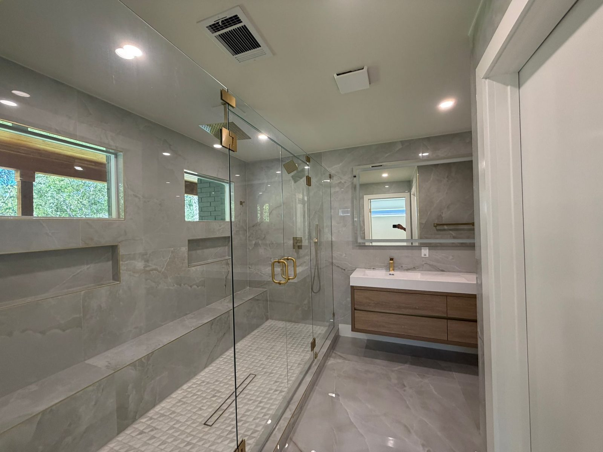

Austin Residential Investment & Redevelopment
Transforming Austin Properties. Creating Lasting Value.
ABCO Residential Group acquires, redevelops and repositions residential property throughout Austin and surrounding communities.
Featured Transformation
6404 Blarwood Drive
A comprehensive Austin residential redevelopment involving structural reconfiguration, new glazing, internal redesign, premium finishes and a full repositioning strategy.
We use this project as a clear example of how ABCO identifies potential, executes redevelopment work and creates a finished home that meets modern buyer expectations.
View Case Study


Our Model
House buyer, cash buyer and redevelopment operator — presented with credibility.
Direct Acquisition
We review off-market, dated, inherited and value-add residential properties across Greater Austin.
Fix & Flip Execution
We focus on practical renovation strategy, design-led improvements and disciplined project delivery.
Value Creation
We reposition properties for resale, helping improve housing stock and creating strong outcomes.
Looking To Sell?
Have a property in Austin or Greater Austin?
We consider homes that are outdated, vacant, inherited, distressed, landlord-owned or in need of renovation.
Start a Confidential Discussion